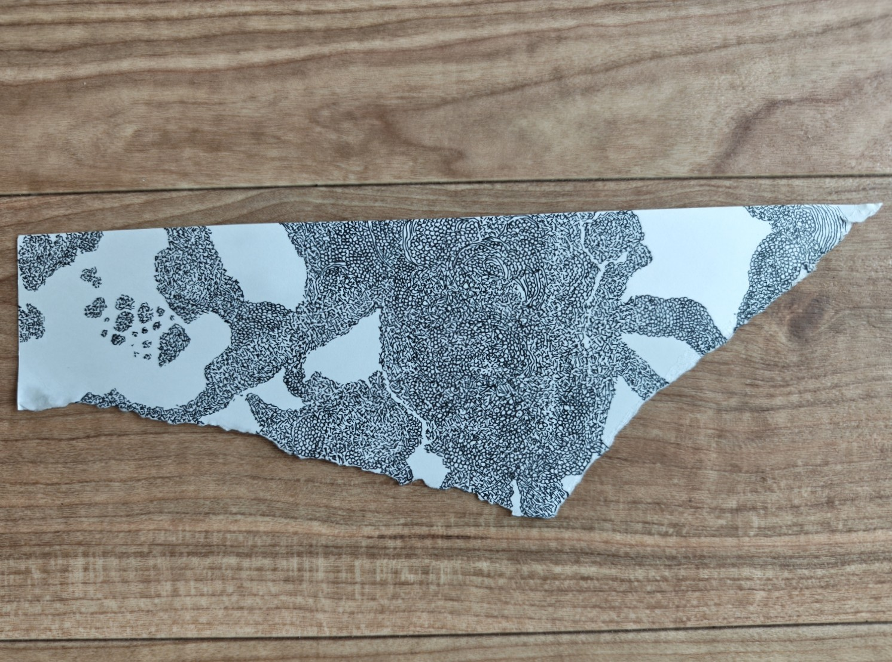
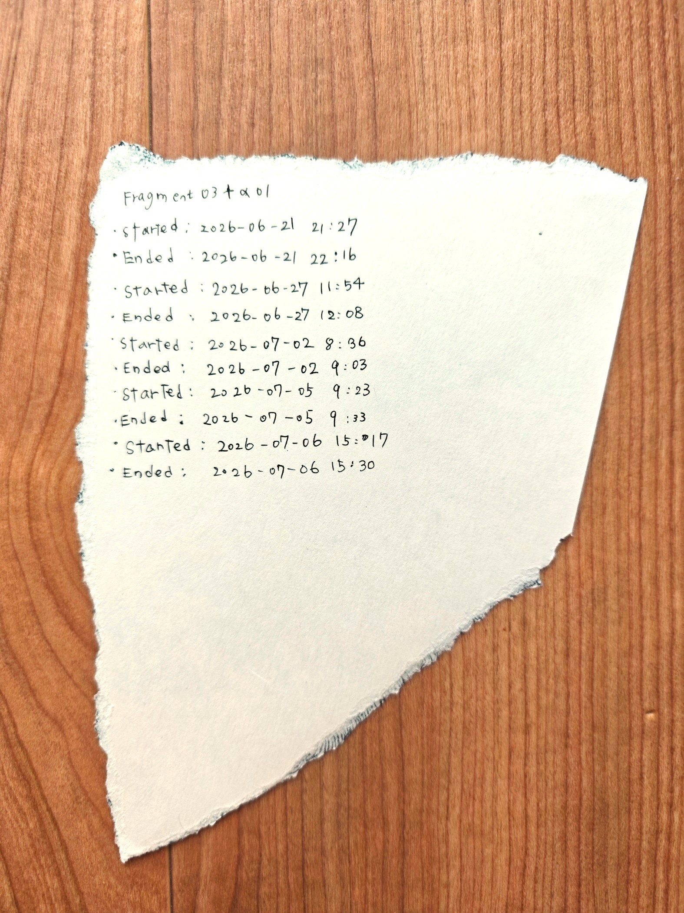
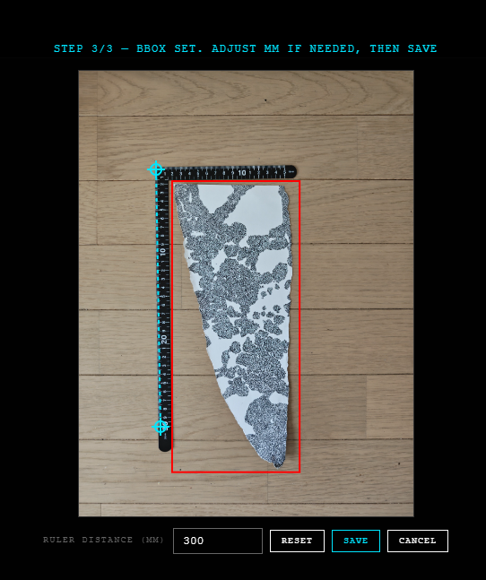
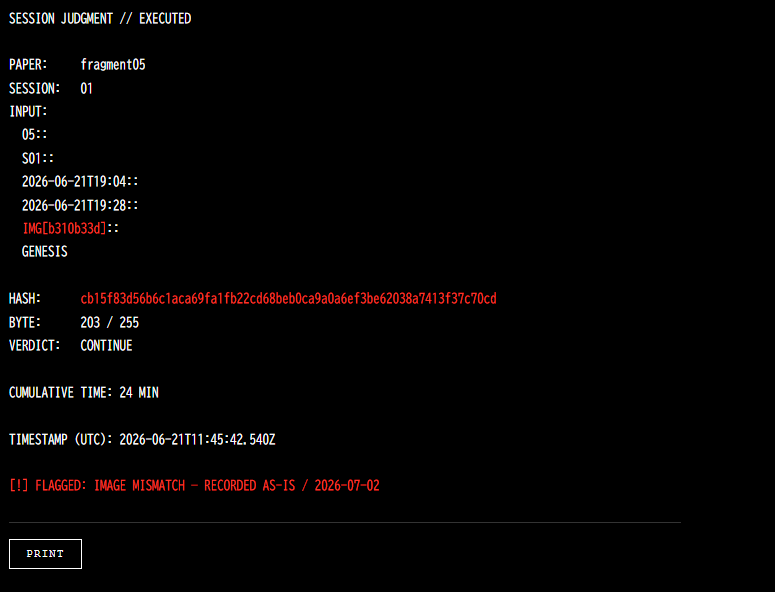

Series: Execution Protocol — Fragment
Status: Ongoing
Archive state 01: F01, F02, F03+α01, F04, F05
Sessions: 24
Labour: 560 minutes recorded
Period: 2026-05-21 — 2026-07-06
Archive sealed 2026-07-21T01:13:18
This page preserves the first sealed five-chain archive. F06 was completed on 26 July 2026 and belongs to a later state; it is not retroactively inserted here.
このページは、最初に封印された五つのチェーンによるアーカイブを保存する。F06は2026年7月26日に完了し、後続する別の状態に属するため、ここには遡及的に挿入しない。
Generated composition — archive state 01

Series 3: Execution Protocol — Fragment
Hand-drawing, Manual Calibration, Chained Records
手描き、手動校正、連鎖する記録
Material record
物質的な記録
Each session begins and ends against a clock. The hand draws; the reverse of the sheet and the digital record preserve when the labour occurred and how the session closed.
各セッションは時計に対して開始され、終了する。手が描き、紙の裏面とデジタル記録が、いつ労働が行われ、どのようにセッションが閉じたかを保存する。
Judgment
判定
The first byte of each session hash determines CONTINUE, DEFER, or END. On DEFER, the operator must choose; that decision remains in the record as an exception.
各セッションのハッシュの先頭バイトが、CONTINUE、DEFER、ENDを決定する。DEFERの場合のみ操作者が選択し、その判断は例外として記録に残る。
Manual calibration
手動校正
The system does not discover the physical boundary by itself. The operator establishes scale from a ruler and manually defines a bounding box. Calculation becomes deterministic only after this bodily decision has been accepted as input.
システムは物理的な境界を自動的に発見しない。操作者が定規から縮尺を設定し、境界ボックスを手作業で確定する。この身体的な判断が入力として受理された後にのみ、計算は決定論的になる。
Temporary composition
一時的な構成
This composition belongs to one date, one set of five chains, and one completed calibration. It is reproducible, but not final. A later fragment or a newly established input produces another state without erasing this one.
この構成は、一つの日付、五つのチェーン、一度の完了した校正に属する。再現可能だが最終形ではない。後のFragment、または新たに確定された入力は、この状態を消去せずに別の状態を生む。
Forgery and verification
偽造と検証
The protocol was written by the same hand it commands. Verification can confirm consistency among recorded inputs; it cannot prove that the input referred to the correct image or that the record was true. F05 marks the point where the operator identified what formal verification had passed.
プロトコルは、それが命じる同じ手によって書かれた。検証は記録された入力同士の整合性を確認できるが、その入力が正しい画像を参照していたことや、記録が真実だったことまでは証明できない。F05は、形式的な検証が通過させたものを操作者が発見した地点を示す。
Physical record — F03+α01
The recto carries the accumulated drawing; the verso carries the timing of the five sessions. They are two surfaces of the same labour record.
表面には蓄積された描画があり、裏面には五つのセッションの時刻がある。両者は同じ労働記録の二つの面である。


Manual calibration

F05 — anomaly record

Archive data — session chains, verification, and recorded anomalies
Session chains
FOUR-LAYER VERIFICATIONrecomputed in your browser
RECORDED ANOMALIES · 5
- 01 — MALFORMED TIMESTAMP
- F02 / S01 endTime = 22026-05-27T10:07
Committed to hash b470a70e…577c4d. Not correctable. - 02 — IMAGE MISMATCH
- F05 / S01 imgHash = b310b33d
identical to F04 / S05 imgHash = b310b33d
flagNote: IMAGE MISMATCH — RECORDED AS-IS / 2026-07-02 - 03 — SHARED IMAGE ACROSS CHAINS
- c7db701c → F05/S04, F03+α01/S03
650c934f → F05/S06, F03+α01/S04 - 04 — NON-MONOTONIC LABOUR COUNTER
- F03+α01 cumulativeMin = 169, 63, 90, 100, 113
- 05 — EXTERNAL PREDECESSOR
- F03+α01 / S01 prevHash = 94a0c5936f7bddfd377296f3d917ebff98448bbc2d4d7082081d53a70744f5d1
Not present in this archive. Chain spans two sheets.
One anomaly was flagged within the sealed archive (F05/S01). Four additional anomalies were identified during an archive review on 25 July 2026. These page-level annotations do not alter the sealed archive.
封印されたアーカイブ内でフラグ付けされた異常は1件（F05/S01）。残る4件は2026年7月25日のアーカイブ点検時に確認された。これらはページ上の注記であり、封印済みアーカイブ自体は変更していない。
Errors are not corrected. They are recorded.
誤りは訂正されない。記録される。